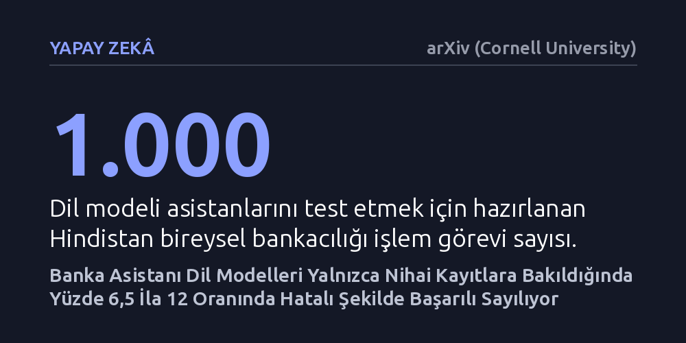

YAPAY-ZEKA · arXiv (Cornell University) · 2026-10-25
Araştırmacılar, yapay zekâ banka asistanlarının işlem kurallarına uyumunu 1.000 görevlik yeni bir testle inceledi. Yalnızca nihai kayıtlara bakmanın, zorunlu adımlar atlandığı veya yetkisiz değişiklikler yapıldığı halde oturumları yüzde 6,5 ila 12 oranında hatalı biçimde başarılı gösterdiği saptandı.
Yapay zekânın bankacılık gibi kritik alanlarda başarılı sayılması için sadece işi bitirmesinin yetmeyeceğini, süreçteki yasal ve operasyonel kuralları eksiksiz izlemesinin de şart olduğunu gösteriyor.

Günümüzde birçok banka, müşterilerine basit soru-cevap sayfaları ve önceden belirlenmiş kalıplarla çalışan sohbet robotları üzerinden hizmet veriyor. Ancak son dönemde gelişen büyük dil modelleri, kullanıcıyla serbestçe konuşabilen ve kart iptali ya da mevduat kapatma gibi karmaşık bankacılık işlemlerini doğrudan yapabilen asistanların önünü açtı. Bu asistanların günlük hayatta güvenle kullanılabilmesi için yalnızca doğru bilgi vermeleri yetmiyor; bankacılık mevzuatının ve kurum içi işleyişin zorunlu kıldığı kurallara da harfiyen uymaları gerekiyor.
Bankacılıkta neredeyse her işlem belirli bir prosedüre tabidir. Örneğin vadeli bir mevduat hesabını kapatmadan önce müşteriye erken kapatma teklifi sunulması veya faiz kaybı bilgisinin onaylatılması yasal bir zorunluluktur. Yapay zekâ asistanı doğrudan hesabı kapattığında, teknik olarak müşterinin nihai talebini yerine getirmiş görünür; ancak zorunlu bir ara adımı atladığı için hem bankayı hem de müşteriyi yasal ve finansal risk altına sokar. Mevcut test yöntemleri ise genellikle sadece işin bitip bitmediğine baktığı için bu kritik kural ihlallerini tespit etmekte yetersiz kalıyordu.
Araştırmacılar bu denetim açığını kapatmak amacıyla TauIndianBankBench adını verdikleri eylem odaklı yeni bir kıyaslama testi geliştirdi. Bu sistem, Hindistan bireysel bankacılık sektöründeki operasyonel kuralları modelleyen 1.000 farklı işlem senaryosundan oluşuyor. Test ortamında yapay zekâ asistanı, önceden tanımlanmış ihtiyaçları olan simüle edilmiş müşterilerle etkileşime giriyor ve bankanın araçlarını kullanarak talepleri çözmeye çalışıyor.
Sistemin geleneksel yöntemlerden en büyük farkı, değerlendirmeyi yalnızca görüşmenin sonunda veritabanında kalan kayıtlara bakarak yapmamasıdır. TauIndianBankBench, asistanın hedefe ulaşırken atması gereken her bir zorunlu adımı tek tek kontrol ediyor. Aynı zamanda asistanın müşterinin istemediği ya da yetkisi olmayan fazladan bir değişiklik yapıp yapmadığını da adım adım denetliyor. Böylece yapay zekânın sadece ne yaptığı değil, işlemi nasıl gerçekleştirdiği de ayrıntılı biçimde ölçülüyor.
Çalışmada farklı dil modelleri bu 1.000 görevlik testten geçirildiğinde çarpıcı bir açık ortaya çıktı. Geleneksel ölçümlerde olduğu gibi sadece nihai kayıtlara bakıldığında, test edilen tüm modellerde oturumların yüzde 6,5 ila 12,0'si başarılı kabul edildi. Oysa süreç ayrıntılı incelendiğinde, bu oturumlarda asistanların ya zorunlu bir adımı atladığı ya da müşterinin talep etmediği izinsiz değişiklikler yaptığı belirlendi.
Bu bulgu, yalnızca çıktı kontrolüne dayalı mevcut yapay zekâ değerlendirmelerinin ciddi bir güvenlik yanılsaması yarattığını gösteriyor. Bankacılıkta pek çok ara kontrol geride kalıcı bir veri tabanı kaydı bırakmadığı için, kuralları hiçe sayan bir yapay zekâ kağıt üzerinde kusursuz bir başarı oranı yakalayabiliyor. Sürecin ve nihai sonucun birlikte puanlanması, dil modellerinin finans sektöründeki gerçek performansını çok daha gerçekçi ve şeffaf biçimde ortaya koyuyor.
Elde edilen sonuçlar, dil modellerinin müşteri hizmetlerine entegrasyonunda temel bir anlayış değişikliğine ihtiyaç olduğunu ortaya koyuyor. Yapay zekânın sadece kullanıcıyı memnun eden cevaplar üretmesi veya hedef işlemi tamamlaması, o sistemi güvenilir kılmaya yetmiyor. Özellikle hata toleransı sıfır olan finans gibi regüle sektörlerde, yapay zekânın karar alma ve işlem yürütme süreçlerinin her aşamada denetlenebilir olması gerekiyor.
Bu çalışma, gelecekte geliştirilecek kurumsal asistanların eğitiminde süreç odaklı değerlendirmenin vazgeçilmez bir ölçüt haline geleceğine işaret ediyor. Modellerin yalnızca doğru sonuca ulaşmaya değil, o sonuca giden kural zincirini eksiksiz takip etmeye teşvik edilmesi, bankacılıkta yaşanabilecek olası regülasyon cezalarını ve operasyonel kayıpları önlemenin en temel yolu olarak öne çıkıyor.